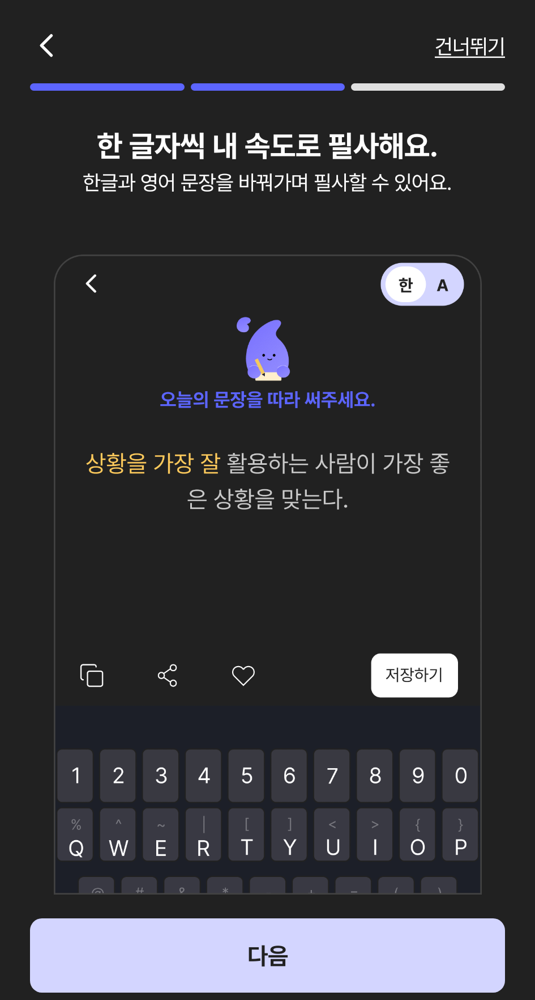
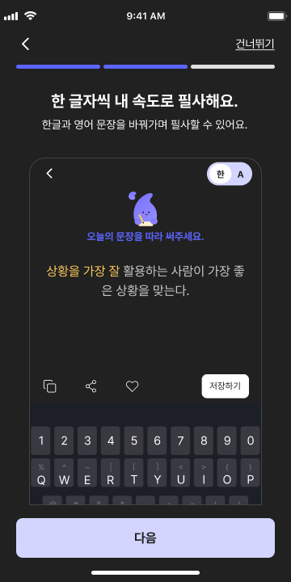
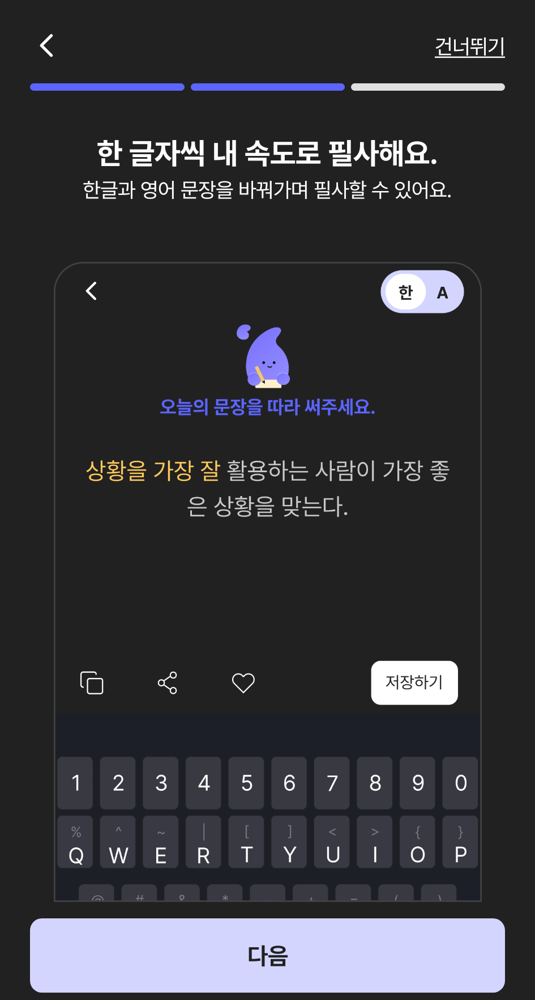
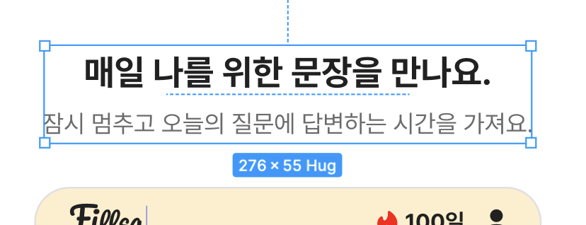

온보딩 Android 후속 QA
Notion 원본 이슈
| 상태 | In progress | 우선순위 | 중간 |
| Device | iOS | Category | UI |
| 화면 | 온보딩 | 담당자 | 보훈 강 |
- 로그인 후 바로 Home 화면 이동 ## iOS 원인 분석 및 해결 계획 · 2026-10-25 분석일: 2026-10-25 (KST) \| 대상: iOS \| 코드 기준: Fiilsa 현재 checkout, HEAD 790e92a.<br>이번 기록은 원인 분석·해결 계획이다. 앱 코드는 수정하지 않았고 시뮬레이터/실기기·실서버 테스트도 실행하지 않았다. 코드로 확인된 사실과 런타임 확인이 필요한 추론을 구분했다. TCA의 State/Action/Reducer는 Android MVI의 화면 상태/이벤트/ViewModel 처리에 대응하며, View는 Jetpack Compose처럼 상태를 받아 화면을 그리는 부분이다. ### 원인과 근거 확인: LoginFeature.swift의 socialLoginCompleted(.success)는 항상 delegate(.moveHome)을 보낸다. AppFeature.swift:224–230은 이를 받아 screen=.main, selectedTab=.home으로 전환한다. 로그인 후 onboardingGuide로 가는 분기가 없다.<br>화면 자체는 존재한다. docs/screens/0_onboarding_guide.md는 2026-10-11 회원 전용 전환으로 프로덕션 스플래시에서 가이드 진입을 제거하고 fixture만 보존했다고 명시한다. docs/screens/0_onboarding.md 및 1_login_member_only_followup_implementation_plan.md도 로그인 성공 후 Home 직행을 규정한다. 가이드 렌더링 실패가 아니라 기존 진입 정책과 새 QA 요구의 차이다. ### 해결 방안 1. 노출 정책(최초 로그인 후 1회인지, 모든 로그인 후인지; 설치/사용자 계정 중 어떤 단위인지)을 확정하고 화면 문서를 맞춘다.<br>2. 확정된 정책에 맞게 로그인 성공 후 AppFeature에서 기존 onboardingGuide 화면으로 분기한다. 로그인 확인을 먼저 끝내 회원 전용 접근 원칙을 유지한다.<br>3. 1회 노출 정책이라면 앱 첫 실행 기록과 가이드 완료 기록을 구분하고, 완료/건너뛰기 시점의 저장 정책을 정한다. 기존 onboardingGuideFinished → Home 경로를 재사용한다. 강제 종료·재로그인·계정 전환 시 동작도 같은 정책으로 정한다. ### 영향 범위와 검증 계획 LoginFeature의 상위 전달 이벤트, AppFeature의 화면 전환, 필요할 경우 기존 설정 저장 계층, 0_onboarding.md·0_onboarding_guide.md·1_login.md. AppFeatureTests/LoginFeatureTests/OnboardingGuideUITests에서 첫 진입·재진입·로그아웃·미로그인 fixture·완료·건너뛰기를 확인한다. ### Figma 기준 및 확인 사항 기존 가이드 Light: https://www.figma.com/design/VdFocqyqTgevMVCQxwAQ2X?node-id=3088-30089 / 3088:30215 / 3088:30412. Dark: https://www.figma.com/design/VdFocqyqTgevMVCQxwAQ2X?node-id=3110-31987 / 3110:32359 / 3110:32112. 화면 기획은 docs/screens/0_onboarding_guide.md. 기존 화면 재사용을 우선하되 로그인 후 노출 빈도는 QA 본문만으로 확정할 수 없다. ### 미검증 사항과 주의점 첫 실행 여부는 로그인 여부나 가이드 완료 여부와 다르다. 정책 미확정 상태에서 매 로그인마다 노출하거나 미로그인 사용자를 회원 화면으로 우회시키지 않는다. 실제 앱 재현은 미실시. 구현 시작 전 화면별 기획에 Figma URL·프레임·컴포넌트·상태·QA 기록 링크를 확정한다. Figma 원본 전체 프레임을 확보하고 컴포넌트부터 수정한 뒤 조립 화면을 대조한다. docs/ui-redesign-workflow.md의 최대 5회 검증을 따르며 실제 캡처 대조 전에는 완료/Pass로 바꾸지 않는다. ## iOS 구현 진행 및 검증 · 2026-10-25 사용자 확정: 설치 후 첫 로그인에 1회, 완료·건너뛰기 후 재노출하지 않는다. AppFeature가 회원 진입 시 별도 onboarding_completed 기록을 확인하고, 기존 3페이지 가이드를 연결한다. 완료 기록은 UserDefaults에 저장하고 로그아웃으로 지우지 않는다. 첫 로그인→가이드→완료→재로그인 홈 이동, 저장소 재생성 후 기록 유지, 로그아웃 뒤 늦은 응답 차단, 미로그인 가이드 건너뛰기 차단 테스트 통과. TCA에서 상태·이벤트를 처리하고 영속 기록은 data/repository 경계를 사용한다. 공통 검증: iPhone 17e iOS 26.4.1에서 자동 테스트 140건 통과. QA 기록: docs/design-qa/2026-10-25-ios-qa.md. Figma 360pt와 런타임 390pt 및 기존 폰트/레이아웃 차이로 전체 화면 최종 수용은 Blocked이며, 티켓 상태는 In progress를 유지한다. 저장 팝업은 별도로 정책 확인 대기. ## iOS 구현 결과 정리 · 2026-10-25 사용자 확정: 설치 후 첫 로그인에 1회, 완료·건너뛰기 후 재노출하지 않는다. AppFeature가 회원 진입 시 별도 onboarding_completed 기록을 확인하고, 기존 3페이지 가이드를 연결한다. 완료 기록은 UserDefaults에 저장하고 로그아웃으로 지우지 않는다.<br>검증: 첫 로그인→가이드→완료→재로그인 홈 이동, 저장소 재생성 후 기록 유지, 로그아웃 뒤 늦은 응답 차단, 미로그인 가이드 건너뛰기 차단 테스트 통과. TCA에서 상태·이벤트를 처리하고 영속 기록은 data/repository 경계를 사용한다. 전체 단위·저장 팝업 UI 회귀: 142건 통과, 실패·skip 0 (Fiilsa-popup-final.xcresult). QA 원문·첨부·원인·수정·검증 결과를 docs/design-qa/2026-10-25-ios-qa-report.html에 정리한다. 시각 검증은 360/390pt 프레임·미등록 폰트·기존 배경 레이아웃 차이로 Blocked. 실계정 OAuth·실서버 v2·이미지 업로드/삭제는 미검증. 상태는 In progress 유지하며 UI 최종 완료를 의미하지 않는다.
페이지 본문 첨부 없음. 댓글 첨부는 아래 댓글에 별도 보존.
Notion 댓글
문제와 재현 조건
2페이지 제목만 13px 높고, 뒤로가기 아이콘이 Home으로 이동하며 첫 제목에 쉼표가 있었다. Dark 360dp 가이드 1·2·3페이지 상태에서 확인했다. 재현 조건과 승인 범위
이슈 원인
2페이지 전용 25dp padding, 모든 뒤로가기에 연결된 Home 이동, 기존 문자열의 쉼표가 원인이었다. 제목 위치와 문자열은 수정 전 Preview 및 소스에서 확인했고, 뒤로가기 Home 이동은 코드 경로로 확인했다.
해결방법과 실제 수정
세 페이지 제목 padding을 30dp로 통일하고 pager의 이전 페이지 복귀·첫 페이지 상위 복귀를 연결했다. 첫 제목의 쉼표도 제거했다.
변경: IntroduceView.kt, IntroduceIndicatorSection.kt, MainNavHost.kt, strings.xml.
수정 전 · 목표 기준 · 수정 후
AS-IS · 수정 전 실제 결과

Figma · 목표 기준

TO-BE · 수정 후 실제 결과

1페이지 · 3페이지 · component tree JSON


검증 결과
| 검증 항목 | 실행 명령·절차·시각 | 실제 결과 | 증거 |
|---|---|---|---|
| 제목·문구 | android preview render :presentation, 2026-10-29 19:28 KST | Pass: 3페이지 제목 상단 모두 239px, 쉼표 없음 | JSON |
| 단위 테스트 | ./gradlew :presentation:testDebugUnitTest --offline, 2026-10-29 | 138건 통과, 0 실패/오류/skip | QA 기록 |
| 최신 Figma·실제 전환 | Figma MCP 재조회; CLI Preview 범위 확인 | Blocked: Figma 재인증 필요. 실제 탭 전환은 Preview로 검증 불가 | 제한 |
하위 제목 컴포넌트와 조립 3페이지 Preview의 텍스트 y=239px을 확인했다. 최신 Figma 좌표/프로토타입은 조회하지 못해 전체 디자인 Pass를 선언하지 않는다.
남은 항목과 다음 행동
Figma 재인증 후 최신 프레임·첫 페이지 이탈 목적지를 확인하고, 실제 뒤로가기 탭을 별도 검증한다. 현재 Notion 상태 변경은 요청되지 않았다.
SooJi · 2026. 10. 28. 20:28 KST · 댓글 ID
407e639f-c7a4-8045-9637-001d7e15389b제보 당시 첨부: 로컬 보존본
